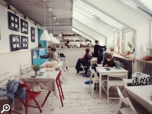
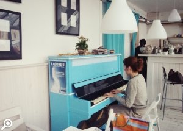
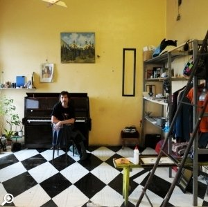
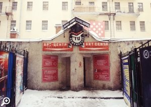

Питерцы, которые живут на крыше

В Lemonade можно затаиться зимним вечером от непогоды, уютно устроившись у окна с вязальными спицами, заботливо припасенными хозяйками кафе. Можно провести вечер со своими друзьями за настольными играми, пуншем и поеданием чудес веганской кухни. Два вечера в неделю – в пятницу и воскресенье – нешуточным гвоздем программы в Lemonade становится голубой «Красный Октябрь». Фортепианные вечера в мансарде – уже устоявшаяся традиция.
Мансарда Lemonade – творческая площадка под самой крышейМансарда Lemonade – кажется, именно то место, где жил бы Карлссон, если бы ему посчастливилось проводить зимы в Петербурге. Здесь есть абсолютно все, чтобы согреть и замерзшие носы, и простуженное настроение: от домашнего чая с имбирем и мягких диванов, до приятной музыки и совершенно волшебной библиотеки.

Под самой крышей, в Lemonade, как снег на голову свалившаяся зима уже не кажется такой устрашающей.
Адрес: ул. Белинского, 9 (ст. метро «Гостиный двор»)
Время работы: с 14.00 до 22.30 без выходных
Сайт: http://vk.com/lemonaderoof
Особый декабрь
Когда, как не в декабре, стоит приобщаться к добрым делам, и проявлять человеческое понимание и тепло там, где раньше это не удавалось. Фотовыставка «Особая грань реальности» посвящена маленьким «людям дождя», детям с диагнозом «аутизм».
Этот проект, сделанный в соавторстве фотографом Алексеем Сивковым и психологом Юлией Пресняковой, – настоящий поступок людей, которые все еще, вопреки всякой логике, хотят изменить наш кривоватый мир. Снимки помогают посмотреть на детей, которых мы так привыкли называть «особыми», совершенно новыми глазами. Помогают понять, от чего они плачут, чему радуются. Помогают ощутить их беззащитность и, одновременно, их силу, которая – в предельной открытости миру. Герои выставки не способны врать или лукавить, чему очень сложно научиться практически любому из нас. Эта выставка – о настоящих людях и, кажется, настоящей любви, на которую способен каждый.
Адрес: Галерея «Рахманинов дворик», ул. Казанская, 5 (ст. метро «Невский проспект»)
Время работы: с 12:00 до 20:00, воскресенье и понедельник – выходные
Сайт: http://osobaya-gran.ru/
Скорым ходом в театр
«Площадка Скороход» – юное театральное пространство, расположившееся в здании одноименной фабрики по производству детской обуви, может стать одним из последних и самых больших открытий в этом году.
Не смотря на двухмесячный возраст, «Скороход» уже уверенно шествует вперед на весьма крепких ногах. На сегодняшний момент это единственное место в Петербурге, где столь концентрированно собраны образчики современного перфомативного искусства. Практически каждый день на сцене «Площадки Скороход» можно увидеть танцевальные и театральные постановки, которые отнюдь не запорошены ни снегом, ни пылью. Принципиальное качество происходящего на подмостках площадки – актуальность.
В декабре зрителей ждет нежная танцевальная постановка хореографа Лилии Бурдинской «I love me(n)», вечер современного танго в исполнении оркестра Primavera, премьера постановки «Мистер Лолита» по роману Набокова и многое другое. Афиша «Площадки Скороход» способна убедить, кажется, любого, что до спячки всем нам еще далеко.
Адрес: Московский пр., 107, к.5 (ст. метро «Московские ворота»)
Сайт: http://skorohod.me
О памятных местах

Декабрь для многих из нас – самое время вспоминать о том, что изменилось, к лучшему ли, к худшему ли за прошедший год. Автору выставки «Место», открывшейся в старейшем арт-центре Петербурга «Пушкинская 10», есть и что вспомнить и о чем рассказать.
Фотоистория Оксаны Даниловой – о творческом сквоте, который до недавнего времени располагался в помещениях бывшего завода им. М.И.Калинина. 1,5 года выставок, кинопоказов, перфомансов, концертов и совместного обитания художников закончились также внезапно, как и начались. Благодаря решению сверху, обжитое пространство, впитавшее в себя дух экспериментального искусства, за краткий срок превратилось в очередное нагромождение офисных помещений.
За аккуратной побелкой и новыми плинтусами скрылись чьи-то картины, мысли и надежды. Комунна «Место» перестала существовать. Но автор выставки уверяет нас, что главное – сохранить память о покинутом месте, ставшем для многих отправной точкой для самостоятельного плаванья.

Выставка открыта на новой площадке Международной резиденции арт- центра «Пушкинская 10», которая отныне и впредь будет принимать у себя работы молодых художников Петербурга и иностранных резидентов.
Адрес: ул. Пушкинская, 10 (ст. метро «Площадь Восстания»)
Время работы: с 16.00 до 20.00
Сайт: http://www.p-10.ru